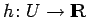
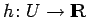

Inhalt Index DeskTop Bronstein

 Dynamische Systeme und Chaos Quantitative Beschreibung von Attraktoren Rekonstruktion der Dynamik aus Zeitreihen Rekonstruktionen mit prävalenten Eigenschaften
Dynamische Systeme und Chaos Quantitative Beschreibung von Attraktoren Rekonstruktion der Dynamik aus Zeitreihen Rekonstruktionen mit prävalenten Eigenschaften


Sei ein Semifluß, generiert durch das Vektorfeld (s. Strukturstabile Differentialgleichungen) und sei A eine kompakte Teilmenge in U mit der fraktalen Dimension . Weiter seien m >2d eine ganze Zahl und  beliebig. In A mögen von höchstens eine endliche Anzahl von Ruhelagen, keine periodischen Orbits der Perioden
beliebig. In A mögen von höchstens eine endliche Anzahl von Ruhelagen, keine periodischen Orbits der Perioden  oder und höchstens endlich viele periodische Orbits der Perioden sein, wobei die Multiplikatoren dieser periodischen Orbits (bis auf 1) jeweils verschieden seien. Dann bildet die Gesamtheit aller Meßfunktionen , für die die Rekonstruktionsabbildung (in verzögerten Koordinaten)
oder und höchstens endlich viele periodische Orbits der Perioden sein, wobei die Multiplikatoren dieser periodischen Orbits (bis auf 1) jeweils verschieden seien. Dann bildet die Gesamtheit aller Meßfunktionen , für die die Rekonstruktionsabbildung (in verzögerten Koordinaten)
| (17.58) |
die folgenden zwei Eigenschaften a) und b) hat, eine prävalente Menge :
a) ist injektiv auf  ;
;
b) ist eine Immersion auf jeder Teilmenge , die darstellbar ist als , wobei offen, eine C1-Abbildung und ist. (Satz von SAUER, YORKE, CASDAGLI, s. Lit. 17.23.)